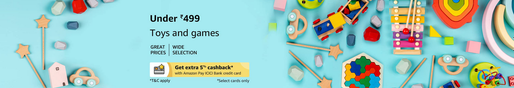

Carousel with Sliding images & Controls

Carousel with Fading images & without Controls
Carousel with sliding images & Indicators
Carousel with - sliding images + Indicators + with Custom Timing Interval
Carousel with - sliding form & images + Indicators + with Custom Timing Interval
Please register for more...
Next
help?
Please register for more...
Get Started
help?